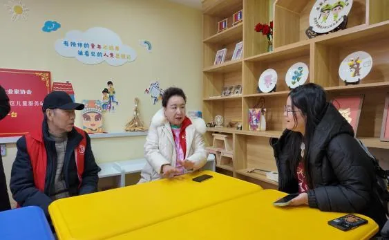
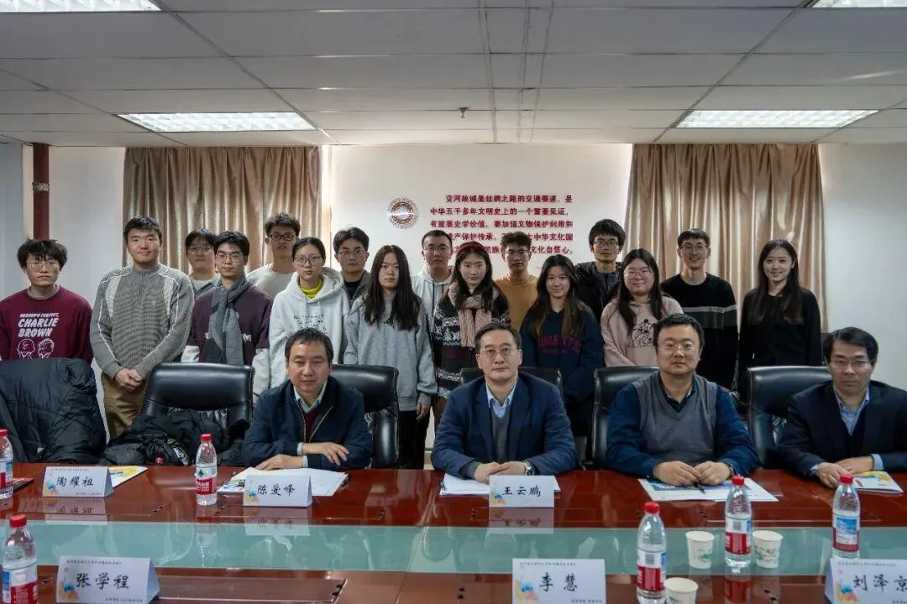
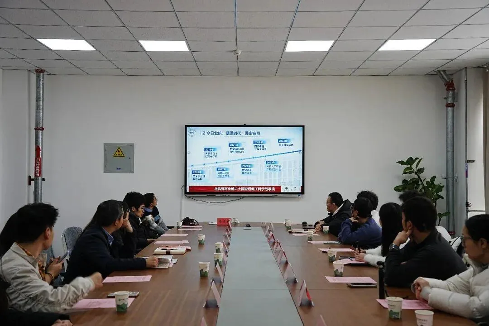
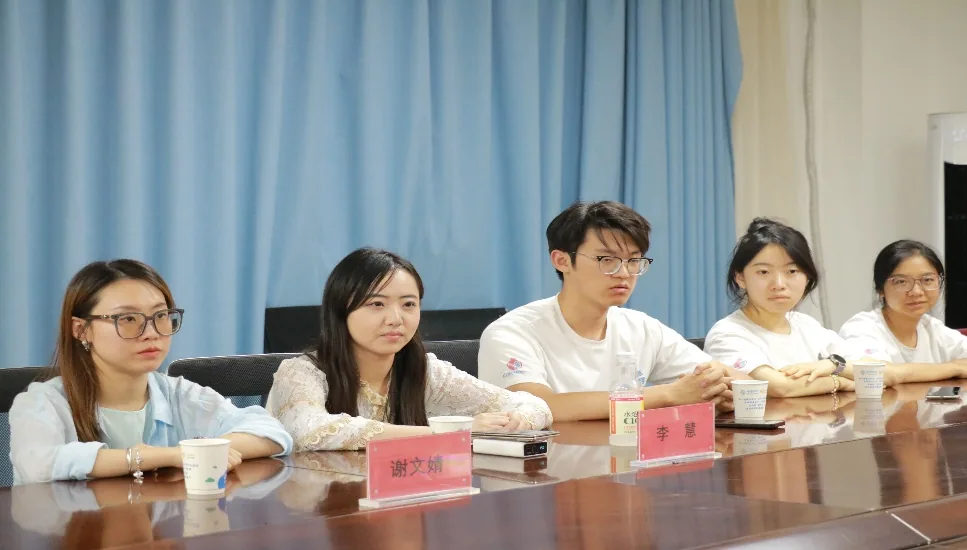
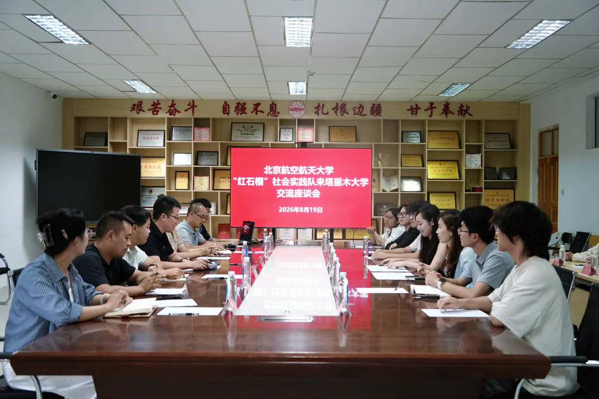

石河子
听老军垦讲述创业往事
从兵团军垦博物馆到社区，展柜里的旧军衣和老军垦的口述相互印证。队员记录亲历者的讲述，并与石河子大学师生交流如何把这些地方史料带进课堂。


2026 年 · 寒假
从石河子的老军垦口述，到伊犁的湟渠旧事，队员沿着博物馆、社区和水渠，寻找各族群众共同建设边疆的记忆。
石河子
从兵团军垦博物馆到社区，展柜里的旧军衣和老军垦的口述相互印证。队员记录亲历者的讲述，并与石河子大学师生交流如何把这些地方史料带进课堂。

吐鲁番
队员在坎儿井考察地下引水工程，在新城西门村与“荣耀之家”的居民围坐交谈。到了吐鲁番学研究院，大家把问题带到壁画和文书前，讨论怎样用数字技术复原壁画、识别出土文书。

伊犁州 · 伊宁市
在伊犁师范大学，队员与师生交流戍边故事和数字绘本。从共同修渠的历史出发，双方还探讨了怎样用数字模型记录湟渠。
可克达拉
队员来到可克达拉职业技术学院，展示红色故事 AIGC 绘本，与师生交流怎样把戍边故事带进实践教学。

资料来源 寒假总结报告第 1–4 页；寒假成果大报告第 22–45 页；寒假汇报第 11–13 页。
2026 年 8 月 · 暑假
来自 13 个学院的 26 名本硕博学子走进新疆的高校、果园与社区，沿着一颗苹果的产业链，记录当地人的生产与生活。
乌鲁木齐
队员走访新疆大学，向当地师生了解各民族学生交流活动怎样组织，也交流了两校开展民族团结教育的经验。

阿拉尔
在塔里木大学，队员参观校史馆，与校方讨论社会实践共建。走出校园，队员又来到阿拉尔沙漠之门，近距离观察沙漠边缘的生态环境。

阿克苏
在红旗坡片区，队员进果园了解品种更新和种植管理，又向企业了解苹果分级、加工与品牌溯源。在柯柯牙纪念馆，他们把果园赖以生长的防护林与当地数十年的治沙史联系起来。


和田
队员在和田县稻香村观察“一户一业态、一家一产业”的庭院经营模式，在和田博物馆观察丝路文物，并与当地单位讨论如何用数字影像记录村庄故事。

资料来源 暑期总结报告第一、二部分；暑期成果大报告第 22–42 页；暑期汇报第 9–13 页。